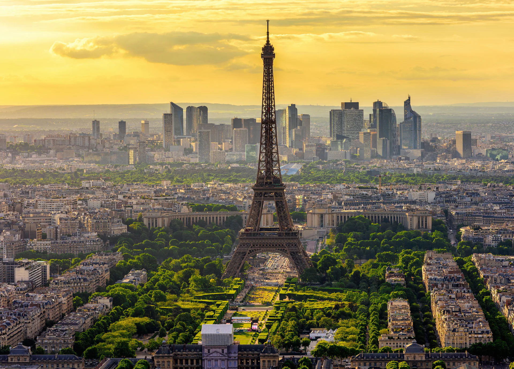

Toate Capitalele Europene
Toate regiunile

Franța
Paris
2.2 milioane
Franceză
Turnul Eiffel
Regatul Unit
Londra
9.0 milioane
Engleză
Big Ben
Italia
Roma
2.8 milioane
Italiană
Colosseumul
 Germania
Germania
Berlin
3.7 milioane
Germană
Poarta Brandenburg
 Spania
Spania
Madrid
3.3 milioane
Spaniolă
Palatul Regal
 Olanda
Olanda
Amsterdam
872 mii
Olandeză
Canalele
 Austria
Austria
Viena
1.9 milioane
Germană
Palatul Schönbrunn
Grecia
Atena
3.1 milioane
Greacă
Acropole
Portugalia
Lisabona
505 mii
Portugheză
Turnul Belém
Cehia
Praga
1.3 milioane
Cehă
Castelul Praga
Ungaria
Budapesta
1.7 milioane
Maghiară
Parlamentul
Suedia
Stockholm
975 mii
Suedeză
Gamla Stan